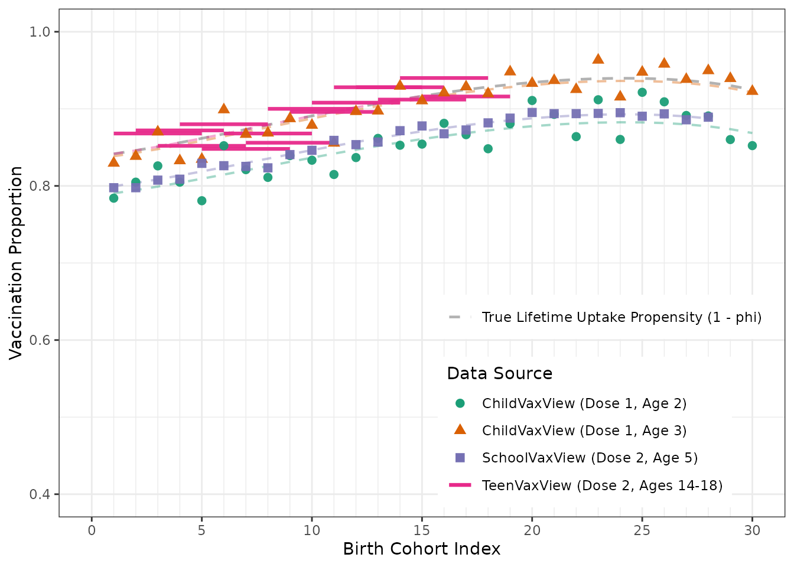
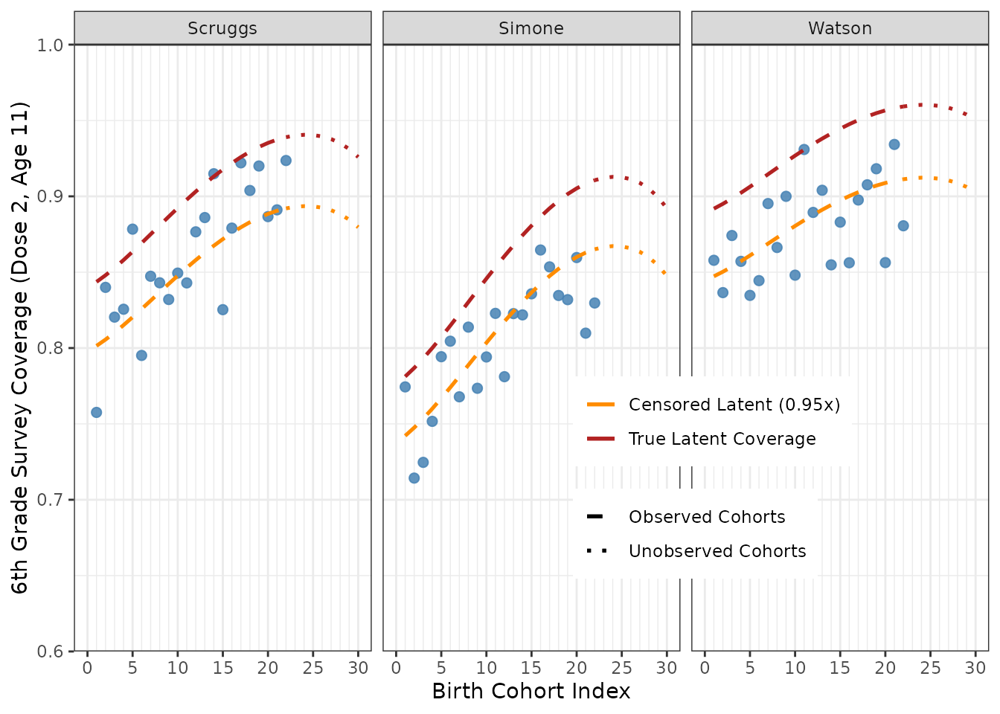
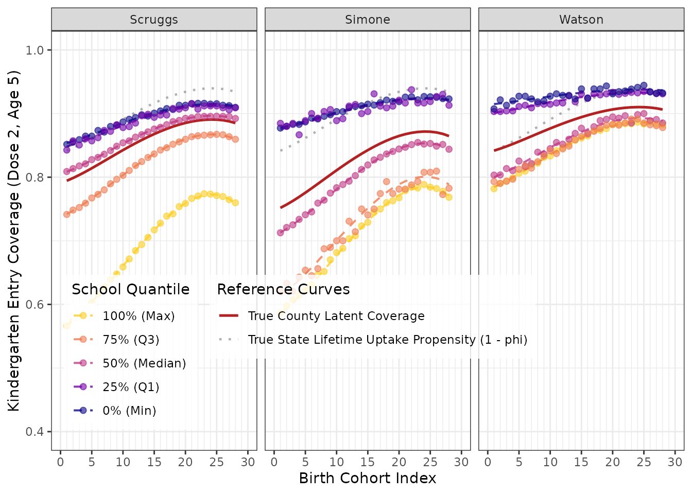
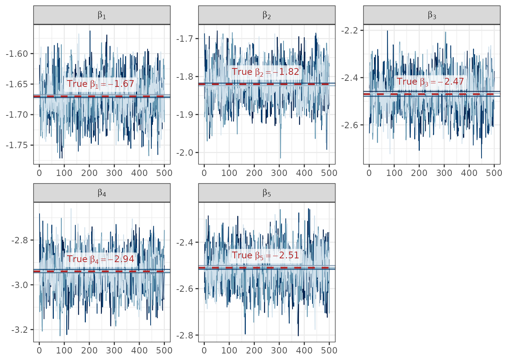
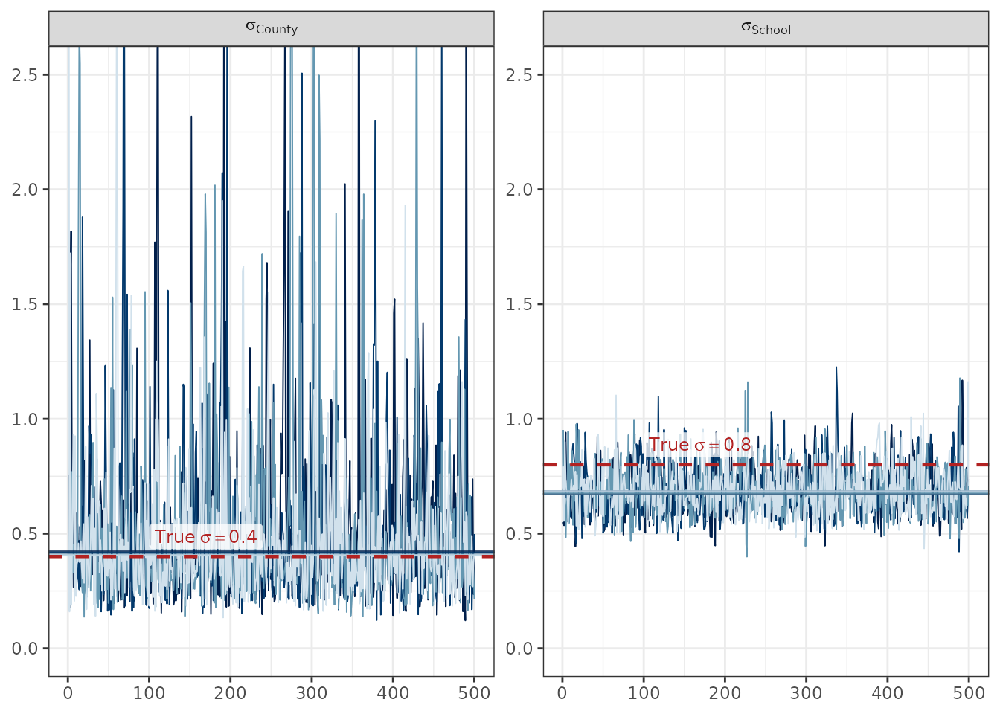
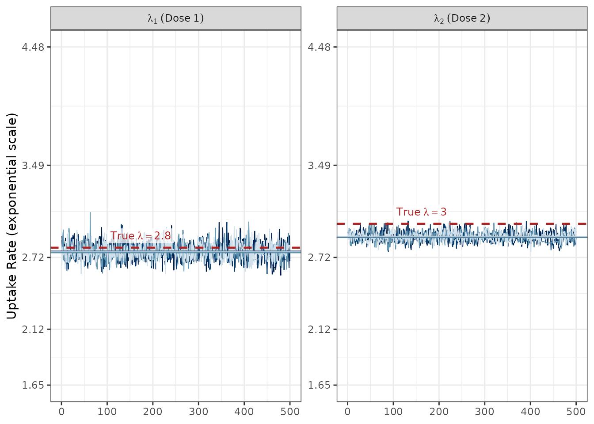
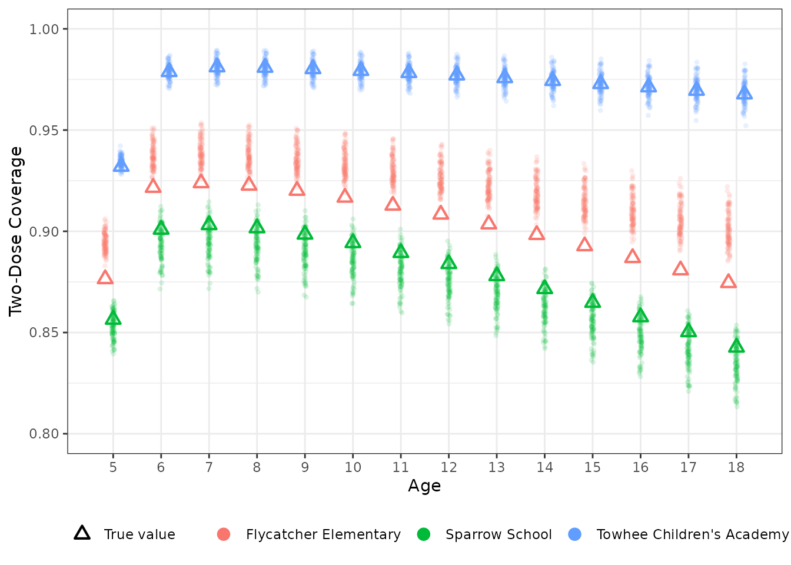

Introduction
The name imuGAP stands for “Immunity: Geographic &
Age-based Projection”. This package allows the user to synthesize across
multiple data sources to make predictions of vaccination coverage for
user-defined populations of interest. For example, one could use the
package to:
- Estimate current vaccination coverage by location across different age groups
- Estimate coverage (or uptake) for a given birth cohort (e.g. people born in 1990) across their life course (i.e. at each age from birth to current age)
- Fill in gaps in observed coverage data (e.g. a school that doesn’t report vaccination coverage in a certain year)
More specifically, the package provides a stan-based model for estimating vaccination coverage by location, cohort, and age for childhood infectious diseases, such as measles. The core model represents a target population as having a life-long propensity for vaccination; some proportion, , of that population is unlikely to vaccinate and the complementary proportion, , is likely to vaccinate. That population then experiences a vaccination rate, , over the model time eras, according to the vaccination eligibility schedule, . These core parameters can vary over time and location, in a user-specifiable way.
Focusing just on the core model element, imagine a particular population location and cohort (where denotes the start of the time period when that group was born). If that cohort is now age , and the vaccine schedule for the first dose is , the expected fraction of that group to have at least one dose is then:
Which is to say, we are representing vaccination coverage via a survival-like model. The model generalizes this approach to the first dose out to arbitrary sequential dose coverage, with each subsequent dose conditional on previous dose receipt.
Walkthrough of Basic Usage
This walkthrough demonstrates the workflow of fitting the model and predicting coverage on simulated data. The package includes several bundled datasets for demonstration, representing a nested geographic hierarchy (State -> Counties -> Schools) for population uptake of a two dose vaccine, like MMR for measles.
1. Preparing and Validating the Input Data
First, let’s explore the three required inputs that define the
location hierarchy, observation metadata, and the actual coverage
observations. The package provides a family of
canonicalize_* functions to validate, clean, and convert
these raw structures into the canonical forms required by the sampler.
You can use those directly to help troubleshoot your inputs, as we do in
the following examples. However, as shown in the next section, the
sampling() method also automatically canonicalizes the
inputs.
Location Hierarchy (locations_sim)
The locations dataset defines the nesting relationship of the
locations in the model. In this simulation, we have a State, which
contains three Counties, which in turn contain various Schools. We
validate and canonicalize it using
canonicalize_locations().
data("locations_sim", package = "imuGAP")
head(locations_sim)
#> loc_id population parent_id
#> <char> <num> <char>
#> 1: State 2895.1333 <NA>
#> 2: Scruggs 1527.7000 State
#> 3: Simone 746.6333 State
#> 4: Watson 620.8000 State
#> 5: Chickadee Elementary 147.8333 Scruggs
#> 6: Nuthatch Academy 368.5333 Scruggs
# Canonicalize and validate
canonical_locations <- canonicalize_locations(locations_sim)
head(canonical_locations)
#> Key: <layer, parent_id, loc_id>
#> loc_id population parent_id layer loc_c_id loc_cp_id
#> <char> <num> <char> <int> <int> <int>
#> 1: State 2895.13333 <NA> 1 1 NA
#> 2: Scruggs 1527.70000 State 2 2 1
#> 3: Simone 746.63333 State 2 3 1
#> 4: Watson 620.80000 State 2 4 1
#> 5: Blue Heron School 115.43333 Scruggs 3 5 2
#> 6: Bluebird Learning Center 49.63333 Scruggs 3 6 2
#> layer_bound
#> <int>
#> 1: 1
#> 2: 1
#> 3: 1
#> 4: 1
#> 5: 1
#> 6: 1Coverage Observations (observations_sim)
The observations dataset contains the counts of individuals who were
vaccinated (positive) out of the total sampled
(sample_n) for each observation. It also includes a
censored column, which is 1 if the observation
is right-censored and NA otherwise. We validate and
canonicalize it using canonicalize_observations().
data("observations_sim", package = "imuGAP")
head(observations_sim[, .(obs_id, loc_id, positive, sample_n, censored)])
#> obs_id loc_id positive sample_n censored
#> <int> <char> <num> <num> <num>
#> 1: 1 Chickadee Elementary 111 155 NA
#> 2: 2 Chickadee Elementary 99 152 NA
#> 3: 3 Chickadee Elementary 110 156 NA
#> 4: 4 Chickadee Elementary 104 155 NA
#> 5: 5 Chickadee Elementary 123 155 NA
#> 6: 6 Chickadee Elementary 119 158 NA
# Canonicalize and validate
canonical_observations <- canonicalize_observations(observations_sim)
head(canonical_observations)
#> Key: <censored, obs_id>
#> obs_c_id positive sample_n censored obs_id
#> <int> <int> <int> <num> <int>
#> 1: 1 111 155 NA 1
#> 2: 2 99 152 NA 2
#> 3: 3 110 156 NA 3
#> 4: 4 104 155 NA 4
#> 5: 5 123 155 NA 5
#> 6: 6 119 158 NA 6Observation Metadata (populations_sim)
The populations dataset acts as observation metadata, mapping each
observation ID (obs_id) to the corresponding location,
birth cohort, age at observation, vaccine dose, and observation weight
(weight). We validate and canonicalize it using
canonicalize_populations().
For observations that record coverage for a single cohort and age
(such as kindergarten entry surveys), there is a 1:1 mapping where each
obs_id has a single row with weight = 1.0:
data("populations_sim", package = "imuGAP")
head(populations_sim)
#> obs_id loc_id cohort age dose weight
#> <int> <char> <int> <int> <int> <num>
#> 1: 1 Chickadee Elementary 1 5 2 1
#> 2: 2 Chickadee Elementary 2 5 2 1
#> 3: 3 Chickadee Elementary 3 5 2 1
#> 4: 4 Chickadee Elementary 4 5 2 1
#> 5: 5 Chickadee Elementary 5 5 2 1
#> 6: 6 Chickadee Elementary 6 5 2 1However, composite observations (such as TeenVaxView surveys spanning
multiple age groups) aggregate individuals across multiple cohorts and
ages into a single observation. In such cases,
populations_sim contains multiple rows for the same
obs_id, with fractional weights summing to
1.0:
# TeenVaxView-style observation spanning ages 14 to 18
observations_sim[
obs_id == 761,
.(obs_id, loc_id, positive, sample_n, age_min, age_max, dose)
]
#> obs_id loc_id positive sample_n age_min age_max dose
#> <int> <char> <num> <num> <int> <int> <int>
#> 1: 761 State 224 257 14 19 2
# Corresponding population metadata with distributed weights summing to 1
populations_sim[obs_id == 761]
#> obs_id loc_id cohort age dose weight
#> <int> <char> <int> <int> <int> <num>
#> 1: 761 State 5 14 2 0.2
#> 2: 761 State 4 15 2 0.2
#> 3: 761 State 3 16 2 0.2
#> 4: 761 State 2 17 2 0.2
#> 5: 761 State 1 18 2 0.2We can then validate and canonicalize the dataset:
# Canonicalize and validate
canonical_populations <- canonicalize_populations(
populations_sim, observations_sim, locations_sim
)
head(canonical_populations)
#> Key: <obs_c_id, loc_c_id, cohort, age, dose>
#> obs_id loc_id cohort age dose weight obs_c_id loc_c_id
#> <int> <char> <int> <int> <int> <num> <int> <int>
#> 1: 1 Chickadee Elementary 1 5 2 1 1 8
#> 2: 2 Chickadee Elementary 2 5 2 1 2 8
#> 3: 3 Chickadee Elementary 3 5 2 1 3 8
#> 4: 4 Chickadee Elementary 4 5 2 1 4 8
#> 5: 5 Chickadee Elementary 5 5 2 1 5 8
#> 6: 6 Chickadee Elementary 6 5 2 1 6 8
#> range_start
#> <int>
#> 1: 1
#> 2: 2
#> 3: 3
#> 4: 4
#> 5: 5
#> 6: 6Validation Failure Examples
To ensure data integrity, the canonicalize_* functions
enforce strict rules on the input data format and constraints. For
example, if we modify the observations data so that the number of
positive cases exceeds the total sample size
sample_n, the validation function will raise a clear
error:
# Create a copy with an invalid observation (positive > sample_n)
invalid_obs <- copy(observations_sim[, .(obs_id, loc_id, positive, sample_n, censored)])
invalid_obs[1, positive := sample_n + 10]
# This will fail validation and throw an error:
tryCatch(
canonicalize_observations(invalid_obs),
error = function(e) message("Caught expected error: ", e$message)
)
#> Caught expected error: `observations` column 'positive' must be <= 'sample_n'; found 1 invalid row(s) with obs_id: 1Similarly, if the locations data contains duplicate location IDs,
canonicalize_locations() will detect the duplication and
throw an error:
# Create a copy with a duplicate location ID
invalid_locs <- rbind(
locations_sim,
data.frame(loc_id = "Scruggs", parent_id = "State"),
fill = TRUE
)
# This will fail validation:
tryCatch(
canonicalize_locations(invalid_locs),
error = function(e) message("Caught expected error: ", e$message)
)
#> Caught expected error: `locations` column 'loc_id' must contain unique values; found 1 duplicate(s): 29See the canonicalize_* function documentation for more
complete validation requirements.
2. Exploring the Synthetic Dataset and Latent Features
Before fitting the model, we can explore how the synthetic observations relate to the underlying latent parameters across all geographic levels in the simulation:
- State Level (ChildVaxView, SchoolVaxView, TeenVaxView): Observations across cohorts spanning doses 1 and 2, plotted against the underlying lifetime propensity .
- County Level (6th Grade Surveys): Right-censored dose 2 coverage at age 11 across Scruggs, Simone, and Watson counties, reflecting county-specific random offsets.
- School Level (Kindergarten Entry): Annual kindergarten entry coverage (dose 2 at age 5) across all 24 individual schools, showing school-level variation around county baselines.
State-Level Observations & Latent Propensity
Show plot code
data("latent_params_sim", package = "imuGAP")
# Categorize state-level observation sources
state_obs <- copy(observations_sim[loc_id == "State"])
state_obs[, source := factor(
fcase(
dose == 1 & age_min == 2, "ChildVaxView (Dose 1, Age 2)",
dose == 1 & age_min == 3, "ChildVaxView (Dose 1, Age 3)",
age_min == 5, "SchoolVaxView (Dose 2, Age 5)",
default = "TeenVaxView (Dose 2, Ages 14-18)"
),
levels = c(
"ChildVaxView (Dose 1, Age 2)",
"ChildVaxView (Dose 1, Age 3)",
"SchoolVaxView (Dose 2, Age 5)",
"TeenVaxView (Dose 2, Ages 14-18)"
)
)]
state_obs[, obs_prop := positive / sample_n]
# Split single-cohort point observations vs multi-cohort cross-sectional survey snapshots
single_cohort_obs <- state_obs[is.na(age_max) | age_max == age_min + 1L]
multi_cohort_obs <- copy(state_obs[!is.na(age_max) & age_max > age_min + 1L])
multi_cohort_obs[, cohort_max := cohort_min + (age_max - 1L) - age_min]
# True state lifetime propensity across cohorts
latent_state <- data.table(
cohort_min = seq_along(latent_params_sim$phi_state),
phi = latent_params_sim$phi_state
)
# Latent milestone coverage curves corresponding to each observation source
n_c <- length(latent_params_sim$phi_state)
latent_curves <- rbindlist(list(
data.table(
cohort_min = seq_len(n_c),
latent_cov = latent_params_sim$phi_state *
latent_params_sim$uptake[2, 1] *
latent_params_sim$censor_reduction,
source = "ChildVaxView (Dose 1, Age 2)"
),
data.table(
cohort_min = seq_len(n_c),
latent_cov = latent_params_sim$phi_state *
latent_params_sim$uptake[3, 1] *
latent_params_sim$censor_reduction,
source = "ChildVaxView (Dose 1, Age 3)"
),
data.table(
cohort_min = seq_len(28),
latent_cov = latent_params_sim$phi_state[1:28] *
latent_params_sim$uptake[5, 2],
source = "SchoolVaxView (Dose 2, Age 5)"
),
data.table(
cohort_min = seq_len(15),
latent_cov = latent_params_sim$phi_state[1:15] *
mean(latent_params_sim$uptake[14:18, 2]),
source = "TeenVaxView (Dose 2, Ages 14-18)"
)
))
latent_curves[, source := factor(source, levels = levels(state_obs$source))]
ggplot() +
geom_line(
data = latent_state,
aes(x = cohort_min, y = phi, linetype = "True Lifetime Propensity (phi)"),
color = "gray40",
linewidth = 0.8,
alpha = 0.5
) +
geom_line(
data = latent_curves,
aes(x = cohort_min, y = latent_cov, color = source),
linetype = "dashed",
linewidth = 0.7,
alpha = 0.4
) +
geom_segment(
data = multi_cohort_obs,
aes(
x = cohort_min,
xend = cohort_max,
y = obs_prop,
yend = obs_prop,
color = source
),
linewidth = 1.1,
alpha = 0.95
) +
geom_point(
data = single_cohort_obs,
aes(x = cohort_min, y = obs_prop, color = source, shape = source),
size = 2.4,
alpha = 0.95
) +
theme_bw() +
scale_x_continuous(
limits = c(0, 30),
breaks = seq(0, 30, by = 5),
minor_breaks = seq(1, 30, by = 1)
) +
scale_y_continuous(limits = c(0.4, 1.0)) +
scale_linetype_manual(
name = NULL,
values = c("True Lifetime Propensity (phi)" = "dashed")
) +
scale_color_brewer(name = "Data Source", palette = "Dark2") +
scale_shape_manual(
name = "Data Source",
values = c(
"ChildVaxView (Dose 1, Age 2)" = 16,
"ChildVaxView (Dose 1, Age 3)" = 17,
"SchoolVaxView (Dose 2, Age 5)" = 15,
"TeenVaxView (Dose 2, Ages 14-18)" = 18
)
) +
guides(
color = guide_legend(
override.aes = list(
shape = c(16, 17, 15, NA),
linetype = c("blank", "blank", "blank", "solid"),
linewidth = c(0, 0, 0, 1.1),
alpha = 1
)
),
shape = "none"
) +
theme(
legend.position = "inside",
legend.position.inside = c(0.98, 0.02),
legend.justification.inside = c(1, 0)
) +
labs(
x = "Birth Cohort Index",
y = "Vaccination Proportion"
)
County-Level Observations & Offsets
Show plot code
county_obs <- copy(observations_sim[loc_id %in% c("Scruggs", "Simone", "Watson")])
county_obs[, obs_prop := positive / sample_n]
# Analytical county-level latent curves for 6th grade survey (age 11, dose 2, censored)
county_latent <- rbindlist(lapply(names(latent_params_sim$off_cnty), function(cnty) {
cohorts <- seq_len(19)
c_idx <- match(cnty, names(latent_params_sim$off_cnty))
offset <- latent_params_sim$off_cnty[c_idx]
phi_shifted <- plogis(qlogis(latent_params_sim$phi_state[cohorts]) + offset)
cov_true <- phi_shifted * latent_params_sim$uptake[11, 2] * latent_params_sim$censor_reduction
data.table(loc_id = cnty, cohort_min = cohorts, latent_cov = cov_true)
}))
ggplot() +
geom_point(
data = county_obs,
aes(x = cohort_min, y = obs_prop),
color = "steelblue", size = 2, alpha = 0.85
) +
geom_line(
data = county_latent,
aes(x = cohort_min, y = latent_cov, color = "True Latent Coverage"),
linetype = "dashed", linewidth = 0.9
) +
facet_wrap(~loc_id) +
theme_bw() +
scale_x_continuous(
limits = c(0, 30),
breaks = seq(0, 30, by = 5),
minor_breaks = seq(1, 30, by = 1)
) +
scale_y_continuous(limits = c(0.4, 1.0)) +
scale_color_manual(name = NULL, values = c("True Latent Coverage" = "firebrick")) +
theme(
legend.position = "inside",
legend.position.inside = c(0.85, 0.15),
legend.justification.inside = c(1, 0)
) +
labs(
x = "Birth Cohort Index",
y = "6th Grade Survey Coverage (Dose 2, Age 11)"
)
School-Level Observations Across Counties
Show plot code
# Select representative schools at the 0, 0.25, 0.5, 0.75, and 1 quantiles of school offsets
sch_info <- locations_sim[!loc_id %in% c("State", "Scruggs", "Simone", "Watson")]
sch_info[, off := latent_params_sim$off_sch[loc_id]]
probs <- c(0, 0.25, 0.5, 0.75, 1)
labels <- c("0% (Min)", "25% (Q1)", "50% (Median)", "75% (Q3)", "100% (Max)")
sel_schools <- sch_info[, {
q_vals <- quantile(off, probs = probs, type = 7)
chosen_idx <- sapply(q_vals, function(qv) which.min(abs(off - qv)))
.(
quantile_label = factor(labels, levels = labels),
loc_id = loc_id[chosen_idx],
off = off[chosen_idx]
)
}, by = parent_id]
# Filter school observations to the selected quantile schools
school_obs <- merge(
observations_sim,
sel_schools[, .(parent_id, loc_id, quantile_label)],
by = c("parent_id", "loc_id")
)
school_obs[, obs_prop := positive / sample_n]
sch_cohorts <- 1:28
# 1. State-level lifetime propensity reference
state_sch_propensity <- rbindlist(lapply(
c("Scruggs", "Simone", "Watson"),
function(cnty) {
data.table(
parent_id = cnty,
cohort_min = sch_cohorts,
phi = latent_params_sim$phi_state[sch_cohorts]
)
}
))
# 2. County-level latent milestone trajectory (age 5, dose 2)
county_sch_latent <- rbindlist(lapply(
names(latent_params_sim$off_cnty),
function(cnty) {
c_idx <- match(cnty, names(latent_params_sim$off_cnty))
offset <- latent_params_sim$off_cnty[c_idx]
phi_shifted <- plogis(
qlogis(latent_params_sim$phi_state[sch_cohorts]) + offset
)
cov_true <- phi_shifted * latent_params_sim$uptake[5, 2]
data.table(parent_id = cnty, cohort_min = sch_cohorts, latent_cov = cov_true)
}
))
# 3. School-level latent milestone trajectories for selected quantile schools
school_sch_latent <- rbindlist(lapply(
seq_len(nrow(sel_schools)),
function(i) {
row <- sel_schools[i]
cnty <- row$parent_id
s_name <- row$loc_id
q_lab <- row$quantile_label
c_offset <- latent_params_sim$off_cnty[cnty]
s_offset <- latent_params_sim$off_sch[s_name]
phi_sch <- plogis(
qlogis(latent_params_sim$phi_state[sch_cohorts]) + c_offset + s_offset
)
cov_sch <- phi_sch * latent_params_sim$uptake[5, 2]
data.table(
parent_id = cnty,
loc_id = s_name,
quantile_label = q_lab,
cohort_min = sch_cohorts,
latent_cov = cov_sch
)
}
))
ggplot() +
# State lifetime propensity reference
geom_line(
data = state_sch_propensity,
aes(x = cohort_min, y = phi, linetype = "True State Lifetime Propensity (phi)"),
color = "gray40",
linewidth = 0.8,
alpha = 0.5
) +
# County latent curve
geom_line(
data = county_sch_latent,
aes(x = cohort_min, y = latent_cov, linetype = "True County Latent Coverage"),
color = "firebrick",
linewidth = 0.9
) +
# School latent curves
geom_line(
data = school_sch_latent,
aes(x = cohort_min, y = latent_cov, color = quantile_label, group = loc_id),
linetype = "dashed",
linewidth = 0.7,
alpha = 0.8
) +
# School observation points (faded)
geom_point(
data = school_obs,
aes(x = cohort_min, y = obs_prop, color = quantile_label),
size = 1.8,
alpha = 0.6
) +
facet_wrap(~parent_id) +
theme_bw() +
scale_x_continuous(
limits = c(0, 30),
breaks = seq(0, 30, by = 5),
minor_breaks = seq(1, 30, by = 1)
) +
scale_y_continuous(limits = c(0.4, 1.0)) +
scale_color_viridis_d(name = "School Quantile", option = "plasma", end = 0.9) +
scale_linetype_manual(
name = "Reference Curves",
values = c(
"True State Lifetime Propensity (phi)" = "dotted",
"True County Latent Coverage" = "solid"
)
) +
guides(
color = guide_legend(reverse = TRUE, order = 1),
linetype = guide_legend(order = 2)
) +
theme(
legend.position = "inside",
legend.position.inside = c(0.02, 0.05),
legend.justification.inside = c(0, 0),
legend.background = element_rect(fill = alpha("white", 0.8), color = NA),
legend.box = "horizontal",
legend.spacing.x = unit(0.3, "cm")
) +
labs(
x = "Birth Cohort Index",
y = "Kindergarten Entry Coverage (Dose 2, Age 5)"
)
3. Fitting the Model
Using the prepared input datasets, we can fit the Bayesian model
using sampling(). The options for the sampler can be
configured using stan_options().
Because compiling the Stan model and running the MCMC chain can take some time, we show the code below without executing it.
fit_sim <- sampling(
observations_sim, populations_sim, locations_sim,
stan_opts = stan_options(
iter = 2000, chains = 4, refresh = 0, seed = 1L
)
)For this walkthrough, we load the pre-computed fit object
fit_sim bundled with the package:
data("fit_sim", package = "imuGAP")Once the model is fit, we can extract posterior draws of the model
parameters using extract_imugap(). For example, let’s
extract the B-spline coefficients representing the state-level vaccine
uptake baseline:
beta_draws <- extract_imugap(fit_sim, pars = "beta_bs")
str(beta_draws)
#> List of 1
#> $ beta_bs: num [1:2000, 1:5] -1.65 -1.59 -1.57 -1.64 -1.68 ...
#> ..- attr(*, "dimnames")=List of 2
#> .. ..$ iterations: NULL
#> .. ..$ : NULLWe can also examine trace plots for key parameters to check MCMC
convergence and evaluate parameter recovery against the true
data-generating simulation parameters
(latent_params_sim).
Basis Spline Coefficients ()
Show plot code
bayesplot::mcmc_trace(
fit_sim$stanfit,
pars = c(
"beta_bs[1]", "beta_bs[2]", "beta_bs[3]",
"beta_bs[4]", "beta_bs[5]"
)
) +
theme_bw() +
theme(
legend.position = "inside",
legend.position.inside = c(0.9, 0.1),
legend.justification.inside = c(1, 0)
)
Hierarchy Layer Variances ()
Trace plots for the hierarchy layer standard deviations
(sigma_layer[1]) and
(sigma_layer[2]) zoomed to the shared range
via coordinate clipping (preserving full chains), compared against the
true simulation standard deviations (dashed red lines and annotated
values):
Show plot code
sigma_ref <- data.frame(
parameter = c("sigma_layer[1]", "sigma_layer[2]"),
true_val = c(latent_params_sim$sigma_cnty, latent_params_sim$sigma_sch),
label = sprintf(
"True~sigma == %.2f",
c(latent_params_sim$sigma_cnty, latent_params_sim$sigma_sch)
)
)
bayesplot::mcmc_trace(
fit_sim$stanfit,
pars = c("sigma_layer[1]", "sigma_layer[2]"),
facet_args = list(labeller = ggplot2::as_labeller(c(
"sigma_layer[1]" = "sigma[County]",
"sigma_layer[2]" = "sigma[School]"
), default = ggplot2::label_parsed))
) +
geom_hline(
data = sigma_ref,
aes(yintercept = true_val),
color = "firebrick",
linetype = "dashed",
linewidth = 0.8
) +
geom_label(
data = sigma_ref,
aes(x = 100, y = true_val, label = label),
parse = TRUE,
color = "firebrick",
fill = ggplot2::alpha("white", 0.75),
linewidth = NA,
vjust = -0.3,
hjust = 0,
size = 3.2
) +
coord_cartesian(ylim = c(0, 2.5)) +
theme_bw() +
theme(legend.position = "bottom")
Vaccination Uptake Rates ()
Trace plots for the unconstrained dose uptake rates
(lambda_raw[1] and lambda_raw[2]) zoomed to
the shared range
via coordinate clipping (preserving full chains), compared against the
log-transformed true simulation parameters
(dashed red lines and annotated values) with an exponentiated y-axis
scale and tick labels:
Show plot code
lambda_ref <- data.frame(
parameter = c("lambda_raw[1]", "lambda_raw[2]"),
true_val = log(latent_params_sim$lambda),
label = sprintf("True~lambda == %.1f", latent_params_sim$lambda)
)
bayesplot::mcmc_trace(
fit_sim$stanfit,
pars = c("lambda_raw[1]", "lambda_raw[2]"),
facet_args = list(labeller = ggplot2::as_labeller(c(
"lambda_raw[1]" = "lambda[1]~(Dose~1)",
"lambda_raw[2]" = "lambda[2]~(Dose~2)"
), default = ggplot2::label_parsed))
) +
geom_hline(
data = lambda_ref,
aes(yintercept = true_val),
color = "firebrick",
linetype = "dashed",
linewidth = 0.8
) +
geom_label(
data = lambda_ref,
aes(x = 100, y = true_val, label = label),
parse = TRUE,
color = "firebrick",
fill = ggplot2::alpha("white", 0.75),
linewidth = NA,
vjust = -0.3,
hjust = 0,
size = 3.2
) +
coord_cartesian(ylim = c(0.5, 1.5)) +
scale_y_continuous(
transform = "exp",
labels = function(x) sprintf("%.2f", exp(x))
) +
labs(y = "Uptake Rate (exponential scale)") +
theme_bw() +
theme(legend.position = "bottom")
4. Defining a Target for Predictions
To predict vaccine coverage for a target population (which can
include locations or cohorts without direct observations, as long as
they exist in the locations hierarchy), we first define a target grid
using create_target(). Note that predictions can only be
made for birth cohorts and locations that have at least some
observations included in the estimation run. In other words, the model
cannot predict coverage for future birth cohorts or unobserved
locations.
For example, we can generate a “snapshot” prediction target for all locations, including the State and County levels, across ages 1 to 18:
target_sim <- create_target(
location = unique(locations_sim$loc_id), age = 1:18,
cohort = max(populations_sim$cohort) - 18, dose = c(1, 2), mode = "snapshot"
)
head(target_sim)
#> obs_c_id loc_id age cohort dose weight
#> <int> <char> <int> <num> <num> <num>
#> 1: 1 State 1 29 1 1
#> 2: 2 Scruggs 1 29 1 1
#> 3: 3 Simone 1 29 1 1
#> 4: 4 Watson 1 29 1 1
#> 5: 5 Chickadee Elementary 1 29 1 1
#> 6: 6 Nuthatch Academy 1 29 1 15. Predicting Coverage
Finally, we run predict() to generate predicted coverage
probabilities for each target population combination. By default it uses
every posterior draw; here we pass posterior_size to
predict over a smaller sub-sample taken from the end of each chain.
Generating predictions also runs the Stan model (in generated quantities mode) and can be time-consuming, so we show the code below without executing it:
predict_sim <- predict(object = fit_sim, target = target_sim, posterior_size = 100)Instead, we load the pre-computed prediction results
predict_sim bundled with the package. This is an object of
class imugap_predict which contains a 3D draws array
(predict_sim$draws) with the MCMC draws for each prediction
target as well as the target information
(predict_sim$target).
data("predict_sim", package = "imuGAP")We can summarize these predictions to get the posterior mean and credible intervals across the target location, age, and doses requested:
# Calculate the posterior mean coverage probability for each location and dose at age 5
summary_predict <- summary(predict_sim)
head(summary_predict)
#> obs_c_id loc_id age cohort dose weight loc_c_id mean q2_5
#> <int> <char> <int> <num> <num> <num> <int> <num> <num>
#> 1: 1 State 1 29 1 1 1 0 0
#> 2: 2 Scruggs 1 29 1 1 2 0 0
#> 3: 3 Simone 1 29 1 1 3 0 0
#> 4: 4 Watson 1 29 1 1 4 0 0
#> 5: 5 Chickadee Elementary 1 29 1 1 8 0 0
#> 6: 6 Nuthatch Academy 1 29 1 1 11 0 0
#> q50 q97_5
#> <num> <num>
#> 1: 0 0
#> 2: 0 0
#> 3: 0 0
#> 4: 0 0
#> 5: 0 0
#> 6: 0 0Now let’s visualize the results. First we will take a look at overall state coverage by cohort. Note that the lower coverage among 5 year olds is due to them only having been eligible for their second dose for one year.
Show plot code
data("latent_params_sim", package = "imuGAP")
# Filter predictions for the State level, dose 2, and ages > 4
state_predict <- summary_predict[loc_id == "State" & dose == 2 & age > 4]
# Create the lookup index for the matching target populations to attach true latent values
state_idx <- predict_sim$target[loc_id == "State" & dose == 2 & age > 4, which = TRUE]
state_predict[, latent := latent_params_sim$coverage[state_idx]]
ggplot(state_predict) +
aes(x = age) +
geom_ribbon(aes(ymin = q2_5, ymax = q97_5, fill = "95% Credible Interval"), alpha = 0.25) +
geom_line(aes(y = q50, color = "Posterior Median"), linewidth = 0.8) +
geom_line(aes(y = latent, color = "True Latent"), linetype = "dashed", linewidth = 0.8) +
theme_bw() +
scale_x_continuous(breaks = 5:18, minor_breaks = NULL) +
scale_y_continuous(limits = c(0.8, 1.0)) +
scale_color_manual(
name = NULL,
values = c("Posterior Median" = "black", "True Latent" = "firebrick")
) +
scale_fill_manual(name = NULL, values = c("95% Credible Interval" = "grey50")) +
theme(
legend.position = "inside",
legend.position.inside = c(0.05, 0.05),
legend.justification.inside = c(0, 0)
) +
labs(x = "Age", y = "State-Level Two-Dose Coverage")
We can also look at the trend in coverage by age at the county level. Note that they follow the same trend as the state but with differing magnitude.
Show plot code
summary_predict |>
subset(loc_id %in% c("Scruggs", "Simone", "Watson") & dose == 2 & age > 4) |>
transform(loc_id = factor(loc_id, levels = c("Simone", "Watson", "Scruggs"))) |>
ggplot() +
aes(x = age) +
geom_line(aes(y = q50, color = loc_id)) +
geom_ribbon(aes(ymin = q2_5, ymax = q97_5, fill = loc_id), alpha = 0.2) +
theme_bw() +
theme(
legend.position = "inside",
legend.position.inside = c(0.12, 0.05),
legend.justification.inside = c(0, 0)
) +
scale_x_continuous(breaks = 5:18, minor_breaks = NULL) +
scale_y_continuous(limits = c(0.8, 1.0)) +
scale_color_discrete(NULL, aesthetics = c("color", "fill")) +
labs(
x = "Age", y = "County-Level Two-Dose Coverage"
)
Next, we can zoom into school-level coverage estimates. As an example, we examine the median (50% quantile) school within Scruggs County from the latent data, visualizing individual posterior trajectory draws (spaghetti plot) alongside the posterior median and the true underlying latent coverage:
Show plot code
scruggs_schools <- locations_sim[parent_id == "Scruggs", loc_id]
off_scruggs <- latent_params_sim$off_sch[scruggs_schools]
med_sch <- names(off_scruggs)[which.min(
abs(off_scruggs - stats::quantile(off_scruggs, 0.5))
)]
predict_sch <- subset(predict_sim, loc_id == med_sch & dose == 2 & age > 4)
draws_sch <- as.data.frame(predict_sch)
target_idx <- predict_sim$target[
loc_id == med_sch & dose == 2 & age > 4,
which = TRUE
]
summary_sch <- summary(predict_sch)
summary_sch$latent <- latent_params_sim$coverage[target_idx]
ggplot() +
geom_line(
data = draws_sch,
aes(
x = age,
y = coverage,
group = interaction(chain, iteration),
color = "Posterior Draws"
),
alpha = 0.12,
linewidth = 0.4
) +
geom_line(
data = summary_sch,
aes(x = age, y = q50, color = "Posterior Median"),
linewidth = 0.9
) +
geom_line(
data = summary_sch,
aes(x = age, y = latent, color = "True Latent"),
linetype = "dashed",
linewidth = 0.9
) +
theme_bw() +
scale_x_continuous(breaks = 5:18, minor_breaks = NULL) +
scale_y_continuous(limits = c(0.8, 1.0)) +
scale_color_manual(
name = NULL,
values = c(
"Posterior Median" = "black",
"True Latent" = "firebrick",
"Posterior Draws" = "steelblue"
),
guide = guide_legend(override.aes = list(
linewidth = c(0.9, 0.9, 0.8),
linetype = c("solid", "dashed", "solid"),
alpha = c(1, 1, 0.6)
))
) +
annotate(
"text",
x = 18, y = 0.99,
label = sprintf("%s (50%% Quantile School)", med_sch),
hjust = 1, vjust = 1,
size = 3.5, fontface = "italic"
) +
theme(
legend.position = "inside",
legend.position.inside = c(0.05, 0.05),
legend.justification.inside = c(0, 0)
) +
labs(
x = "Age",
y = "Two-Dose Coverage"
)
Finally let’s look at some selected schools and see how their predicted coverage compares to the true underlying coverage from the data simulation process.
Because the model employs hierarchical partial pooling, estimates for schools with smaller sample sizes (such as Flycatcher Elementary, ~59 students per grade) experience stronger shrinkage toward the county mean () than larger schools (such as Towhee Children’s Academy, ~207 students per grade), balancing local empirical data with group-level priors.
Show plot code
schools <- c(
"Towhee Children's Academy", # ~207 per grade
"Sparrow School", # ~87 per grade
"Flycatcher Elementary" # ~59 per grade
)
# Subset to targets of interest (all retained posterior draws)
predict_sub <- predict_sim |>
subset(loc_id %in% schools & dose == 2 & age > 4)
# Get the pre-computed background coverage matching the subsetted target
target_idx <- predict_sim$target[loc_id %in% schools & dose == 2 & age > 4, which = TRUE]
latent_ref <- copy(predict_sub$target)
latent_ref$coverage <- latent_params_sim$coverage[target_idx]
# Convert predictions to a long-format data.frame
draws_df <- as.data.frame(predict_sub)
# Now plot it all
ggplot() +
aes(age, coverage, color = loc_id) +
geom_point(
data = draws_df,
alpha = 0.15, shape = 16, size = 1.2,
position = position_jitterdodge(
dodge.width = 0.5,
jitter.width = 0.15
)
) +
geom_point(
data = latent_ref,
mapping = aes(shape = "True value"),
size = 2.5,
stroke = 1.1,
position = position_dodge(width = 0.5)
) +
theme_bw() +
scale_shape_manual(
name = "",
values = c("True value" = 24)
) +
scale_color_discrete(NULL, aesthetics = c("color", "fill")) +
scale_x_continuous(breaks = 5:18, minor_breaks = NULL) +
scale_y_continuous(limits = c(0.8, 1.0)) +
theme(legend.position = "bottom") +
labs(color = "School", x = "Age", y = "Two-Dose Coverage")